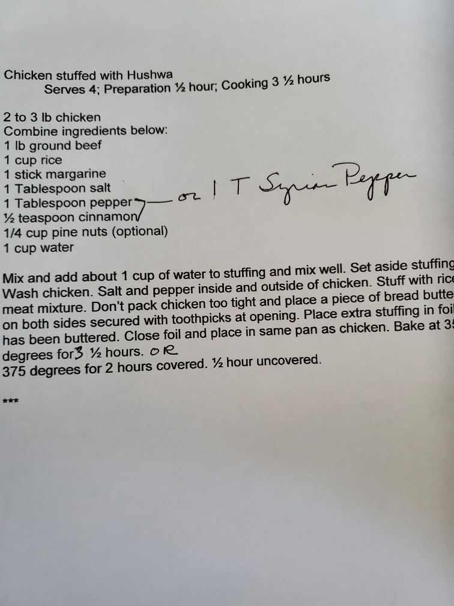

Whole chicken filled with spiced ground beef, rice, and pine nuts — slow roasted to perfection
Section
Syrian-Lebanese
Serves
4
Prep
30 min
Cook
3½ hours
Ingredients
Chicken
2–3 lb whole chicken
Salt and pepper
Hushwa Stuffing
1 lb ground beef
1 cup rice
1 stick margarine
1 Tbsp salt
1 Tbsp pepper (or 1 Tbsp Syrian Pepper)
½ tsp cinnamon
¼ cup pine nuts (optional)
1 cup water
Syrian Pepper: Equal parts allspice and black pepper with a touch of cinnamon. Mix and store in a glass jar.
Original Recipe Card

Typed recipe card
Directions
Combine stuffing ingredients — ground beef, rice, margarine, salt, pepper (or Syrian Pepper), cinnamon, and pine nuts. Add about 1 cup of water and mix well. Set aside.
Wash the chicken. Salt and pepper inside and outside generously.
Stuff the chicken with the rice and meat mixture. Don't pack too tight. Place a piece of buttered bread at the opening and secure with toothpicks.
Place any extra stuffing in buttered foil, close tightly, and place in the same pan alongside the chicken.
Bake at 350°F for 3½ hours. Or: bake at 375°F for 2 hours covered, then ½ hour uncovered.
Let rest before carving. Serve with the stuffing spooned alongside.
Tip: The buttered bread plug at the opening keeps the stuffing from falling out and bastes the inside of the chicken as it roasts.
Extra stuffing: The foil packet of extra hashwa comes out perfectly moist from the roasting pan juices — don't skip it.